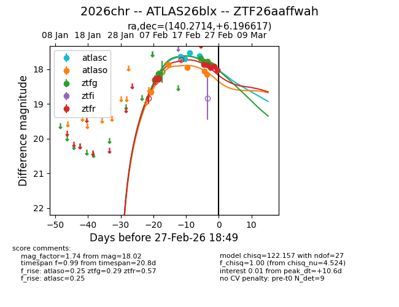
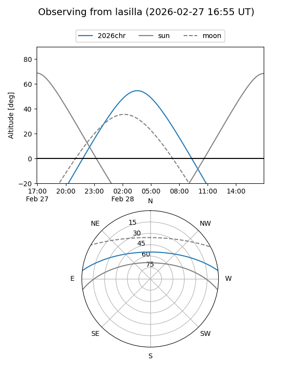
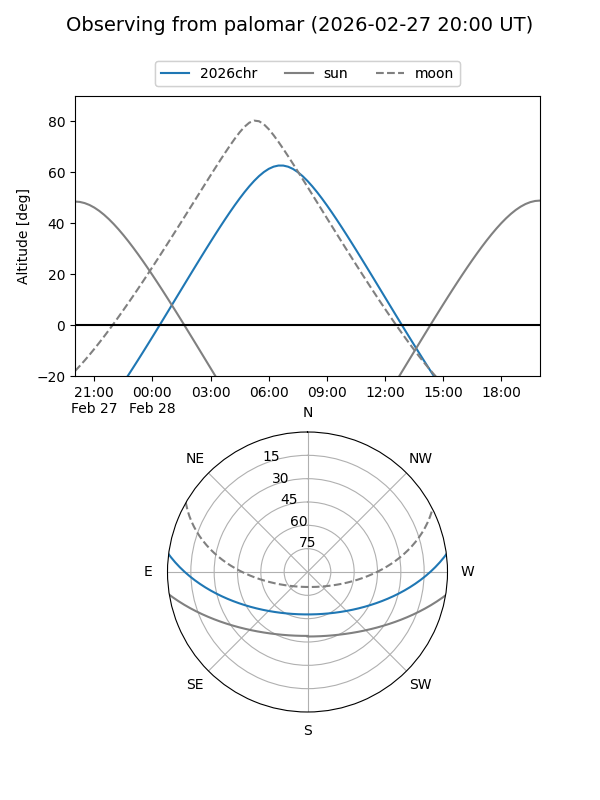
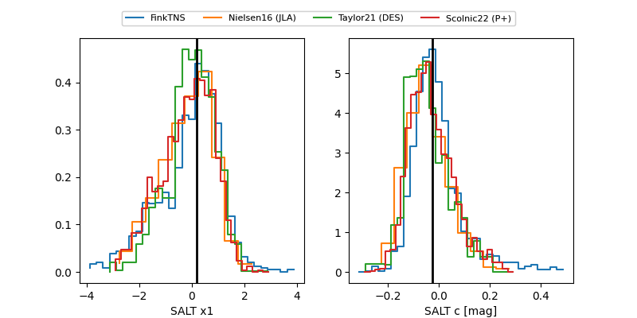

2026chr
Target 2026chr at 2026-02-27 18:51
Aliases and brokers:
FINK: link
Lasair: link
ALeRCE: link
TNS: link
YSE: link
alt names
ZTF26aaffwah (ztf,fink_ztf)
2026chr (tns,yse)
ATLAS26blx (atlas)
Coordinates:
equatorial (ra, dec) = 140.2714,+6.19662
equatorial (HMS+DMS) = 09:21:05.13,+06:11:47.82
galactic (l, b) = (225.7278,+35.92772)
Flags:
Photometry:
last atlasc=17.86, atlaso=18.14, ztfg=17.91, ztfr=18.02
5 atlasc, 5 atlaso, 8 ztfg, 8 ztfr detections
Lightcurve

Visibility


Additional plots
